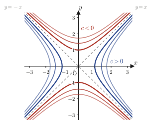
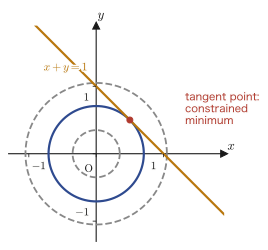

Chapter 6Partial Derivatives (Differentiation of Multivariable Functions)
All of the functions we studied in Chapters 1 through 5 had the form $y=f(x)$—functions for which choosing the single variable $x$ determines the value $y$ uniquely. Quantities in the real world, however, usually depend on two or more variables at the same time. For example, the temperature of a metal plate varies with the point on the plate (that is, with the two coordinates $x,y$), and the pressure of a gas is a function of two variables, the volume and the temperature. The free energy that appears so frequently in materials science is likewise written as a function of several variables such as temperature, composition, and pressure. To handle such “functions of two or more variables,” in this chapter we study multivariable functions and their derivatives—partial derivatives (the name means differentiation “in part”).
The rules for computing partial derivatives themselves are, in fact, surprisingly simple. “When differentiating partially with respect to $x$, just treat $y$ as a constant and carry out the one-variable differentiation you have learned so far”—that is almost all there is to it. What we will examine carefully, however, are the new phenomena that arise because there are now two variables: that finding a limit can no longer be done in just one way, that an extremum need not occur even when all the first-order derivatives are $0$, and that there are “sharp” points at which no tangent plane exists. The goals of this chapter are for you (i) to use the basic concepts of limits, partial derivatives, and total differentiability for functions of two variables accurately, through concrete examples; (ii) to derive by yourself the Laplacian in polar coordinates $\pdiff{^2f}{x^2}+\pdiff{^2f}{y^2}=\pdiff{^2f}{r^2}+\dfrac1r\pdiff{f}{r}+\dfrac{1}{r^2}\pdiff{^2f}{\theta^2}$, using the differentiation of composite functions (the chain rule); and (iii) to derive criteria for extrema from Taylor's theorem for two variables and to solve constrained extremum problems by the method of Lagrange multipliers. The techniques of partial differentiation you acquire here underlie not only the multiple integrals of the next chapter but also the linear algebra of Part II (quadratic forms), the vector analysis of Part IV (gradient, divergence, curl), and the thermodynamics and statistical mechanics used so heavily in materials science (pressure and entropy as partial derivatives of the free energy).
- That a function of two variables $z=f(x,y)$ represents a surface in space; how to investigate a limit in two variables along lines $y=mx$ or in polar coordinates $x=r\cos\theta,\ y=r\sin\theta$; and the limitations of this method (the limits along the individual directions may all agree even though the true limit does not exist)
- The definition of the partial derivatives $\pdiff{f}{x},\pdiff{f}{y}$, and their linearity, product rule, quotient rule, and composite-function formula
- Schwarz's theorem (a sufficient condition for $f_{xy}=f_{yx}$) and the definition of total differentiability—understanding, through an example that is partially differentiable but not totally differentiable, how this differs from differentiability in one variable
- The partial derivative formulas for composite functions (the chain rule): the case of a single parameter and the case of two parameters
- The transformation formulas for partial derivatives under the change to polar coordinates $x=r\cos\theta,\ y=r\sin\theta$, and the derivation of the polar-coordinate expression for the Laplacian $\displaystyle\pdiff{^2f}{x^2}+\pdiff{^2f}{y^2}=\pdiff{^2f}{r^2}+\frac1r\pdiff{f}{r}+\frac{1}{r^2}\pdiff{^2f}{\theta^2}$
- Taylor's theorem for functions of two variables, $f(a+h,b+k)=\sum_{n}\dfrac{1}{n!}\left(h\pdiff{}{x}+k\pdiff{}{y}\right)^n f(a,b)+R_{n+1}$, and examples of its application
- The definitions of local maximum and local minimum for functions of two variables, and the criterion for extrema in terms of the discriminant $D=f_{xy}^2-f_{xx}f_{yy}$ (proved by analyzing the sign of a quadratic form)
- The method of Lagrange multipliers for solving constrained extremum problems
Source notes: Yasuhide Mochizuki, Mathematics Notes: Calculus, pp. 51–62.
6.1 Functions of Two Variables and Their Limits
6.1.1 What does $z=f(x,y)$ represent?
The graph of the one-variable function $y=f(x)$ was a curve in the $xy$-plane. The graph of $z=f(x,y)$, where there are now two variables, represents a surface in space with the three coordinate axes $x,y,z$ ($xyz$ coordinate space). The correspondence is this: each time we choose a point $(x,y)$, the height $z=f(x,y)$ there is determined uniquely.
As a concrete example, let us consider $z=f(x,y)=x^2+y^2$. To find out what figure this equation represents, it helps to fix the height $z$ at a single value $a$ and look at what lies on the horizontal plane $z=a$.
Intuition: What does $z=a$ mean?
The equation $z=a$ ($a$ is a constant) represents “the horizontal plane at height $a$” in $xyz$ coordinate space. To find the intersection of the surface $z=f(x,y)$ with this horizontal plane $z=a$, we need only read $f(x,y)=a$ as a figure in the $xy$-plane. For example, the horizontal plane $z=1$ is the $xy$-plane lifted up by 1, and the picture is that the curve $x^2+y^2=1$ (a circle of radius 1) sits on top of it.
Applying this viewpoint to $z=x^2+y^2$, we obtain
(i) When $z=0$: $x^2+y^2=0$, that is, just the origin (a circle of radius $0$).
(ii) When $z=1$: $x^2+y^2=1$, a circle of radius $1$.
(iii) When $z=2$: $x^2+y^2=2$, a circle of radius $\sqrt2$.
$\vdots$
and so as the height $z$ increases, the radius $\sqrt z$ of the circular cross section at that height increases too. Thus we see clearly that $z=x^2+y^2$ represents a bowl-shaped surface that opens upward with its vertex at the origin—a paraboloid. In this way, a curve in the $xy$-plane satisfying $z=f(x,y)=c$ ($c$ is a constant) is called the contour line at height $c$ (the same idea as the contour lines on a map). The shape of the whole surface can be thought of as the contour lines stacked up while the height is changed little by little.
Example 6.1: The surface $z=x^2-y^2$ with a saddle point
Investigate what kind of surface $z=f(x,y)=x^2-y^2$ is by examining the contour lines $f(x,y)=c$ ($c$ is a constant).
Solution. We consider $x^2-y^2=c$ case by case.
When $c=0$: from $x^2-y^2=0$, that is, $(x-y)(x+y)=0$, we get $y=x$ or $y=-x$, which are two lines (meeting at the origin).
When $c>0$: rewriting $x^2-y^2=c$ gives $x=\pm\sqrt{y^2+c}$, which is a hyperbola opening in the direction of the $x$-axis (at $y=0$ it comes closest to the origin, namely at $x=\pm\sqrt c$). The larger $c$ is, the farther the hyperbola moves away from the lines $y=\pm x$.
When $c<0$: from $x^2-y^2=c=-|c|$ we get $y^2-x^2=|c|$, that is, $y=\pm\sqrt{x^2+|c|}$, and this time we have a hyperbola opening in the direction of the $y$-axis.
Therefore the contour lines form a pattern centered at the origin in which the family of hyperbolas opening in the direction of the $x$-axis ($c>0$) and the family of hyperbolas opening in the direction of the $y$-axis ($c<0$) interchange across the two lines $y=\pm x$ ($c=0$). As for the shape of the surface, in the direction of the $x$-axis it curves upward from below (at $y=0$, $z=x^2\ge0$), and in the direction of the $y$-axis it curves downward from above (at $x=0$, $z=-y^2\le0$)—it has the shape of a horse's saddle. A point such as this origin, which looks like a local maximum in some directions and a local minimum in others, is called a saddle point. When we test for extrema in Section 6.6, this surface reappears as a perfectly typical example of a surface that “has no extremum.”

6.1.2 Limits of functions of two variables
For the limit of a function of one variable, $\displaystyle\lim_{x\to a}f(x)$, there were only two paths along which $x$ could approach $a$: from the right ($x\to a+0$) or from the left ($x\to a-0$). For the limit of a function of two variables, $\displaystyle\lim_{(x,y)\to(a,b)}f(x,y)$, however, there are infinitely many paths along which the point $(x,y)$ can approach the point $(a,b)$: straight lines, parabolas, spirals, ….
Let us check with concrete numbers. Take $f(x,y)=x+y$ and consider letting $(x,y)$ approach the point $(1,1)$. Approaching along the line $y=x$ with $x=0.9,\ 0.99,\ 1$, we get $f=1.8,\ 1.98,\ 2$, which approach the value $2$. On the other hand, along another line $y=2-x$, regardless of the value of $x$ we always have $f(x,2-x)=x+(2-x)=2$, so it remains $2$ from the start. Both of these paths approached the same value $2$, but there are infinitely many ways of approaching $(1,1)$ other than these two lines (parabolas, spirals, …). How should we define the limit so as to guarantee rigorously, not merely by trying a few lines but for all ways of approaching, that “the same value is approached by whatever path”? So let us define the limit of a function of two variables precisely.
Definition 6.1: Limit of a function of two variables
For a function $f(x,y)$ defined near a point $(a,b)$, let the distance between $(x,y)$ and $(a,b)$ be $\displaystyle\sqrt{(x-a)^2+(y-b)^2}$. If, for every positive number $\varepsilon$, there exists a positive number $\delta$ such that
$$ 0 \lt \sqrt{(x-a)^2+(y-b)^2} \lt \delta \ \implies\ |f(x,y)-P| \lt \varepsilon $$holds, we say that $f(x,y)$ approaches $P$ however $(x,y)$ approaches $(a,b)$, and write $\displaystyle\lim_{(x,y)\to(a,b)}f(x,y)=P$. The distance $|x-a|$ on the number line in the one-variable case has simply been replaced by $\sqrt{(x-a)^2+(y-b)^2}$ (the distance in the plane) in two variables; the idea is the same.
What makes this definition troublesome is the phrase “however it approaches.” For one variable it was enough for the right-hand and left-hand limits to agree, but for two variables we must check that the same value is approached in all of the infinitely many ways of approaching. Since we cannot try every path one by one, the original notes investigate limits by the following two representative methods.
(I) The method of approaching along the line $y=mx$ (a line of slope $m$), used when $x\to0$, $y\to0$.
(II) The method of using polar coordinates $x=r\cos\theta,\ y=r\sin\theta$ (a way of representing a point by its distance $r$ from the origin and an angle $\theta$, treated again in detail in Section 6.5 of this chapter) and investigating the limit as $r\to0$.
Example 6.2: Computing limits along a line $y=mx$
Investigate the following two limits by Method (I) (set $y=mx$). (i) $\displaystyle\lim_{(x,y)\to(0,0)}\frac{x^3-y^3}{x^2+y^2}$ (ii) $\displaystyle\lim_{(x,y)\to(0,0)}\frac{xy}{x^2+y^2}$
Solution. (i) Set $y=mx$ ($m$ is a constant) and reinterpret the problem as a limit as $x\to0$.
$$ \lim_{(x,y)\to(0,0)}\frac{x^3-y^3}{x^2+y^2} = \lim_{x\to0}\frac{x^3-(mx)^3}{x^2+(mx)^2} = \lim_{x\to0}\frac{x^3(1-m^3)}{x^2(1+m^2)} = \lim_{x\to0}\frac{1-m^3}{1+m^2}\cdot x = 0 $$(We factored $x^3,x^2$ out of the numerator and the denominator, respectively, canceled, and then let $x\to0$. The last expression is of the form “a finite constant $\times\, x\to0$,” so it equals $0$.) This result is always $0$, regardless of the value of the slope $m$. That is, no matter along which line we approach the origin, we approach the same value $0$.
(ii) Similarly, setting $y=mx$, we obtain
$$ \lim_{(x,y)\to(0,0)}\frac{xy}{x^2+y^2} = \lim_{x\to0}\frac{x\cdot mx}{x^2+(mx)^2} = \lim_{x\to0}\frac{mx^2}{x^2(1+m^2)} = \frac{m}{1+m^2} $$(This time $x$ cancels out exactly, and an expression in $m$ alone remains, so there is no need even to take the limit $x\to0$.) This value changes with $m$—for example, it is $0$ if $m=0$ (approaching along the $x$-axis) and $\frac12$ if $m=1$ (approaching along the line $y=x$). Since the answer differs depending on the way of approach, this limit does not exist.
Caution: Checking every line does not mean having checked “every way of approaching”
Method (I) examines all the ways of approaching along the straight lines $y=mx$. However, lines are not the only paths along which the point $(x,y)$ can approach $(0,0)$—it can also approach along a parabola or a more complicated curve. Therefore, even if the function converges to the same value along every line $y=mx$, it does not necessarily follow that the true limit (the limit in the sense of Definition 6.1) exists. Let us confirm this pitfall in the next example.
Example 6.3: An example in which the limits along lines agree but the true limit does not exist
For $\displaystyle f(x,y)=\frac{xy^2}{x^2+y^4}$ (taken to be undefined at the origin): (a) Find all the limits along the lines $y=mx$. (b) Find the value obtained when the origin is approached along the parabola $x=y^2$. (c) Does the limit $\displaystyle\lim_{(x,y)\to(0,0)}f(x,y)$ exist?
Solution. (a) Setting $y=mx$, we obtain
$$ f(x,mx) = \frac{x(mx)^2}{x^2+(mx)^4} = \frac{m^2x^3}{x^2(1+m^4x^2)} = \frac{m^2x}{1+m^4x^2} $$(We factored $x^2$ out of the denominator and canceled.) As $x\to0$, the denominator tends to $1$ and the numerator $m^2x\to0$, so we obtain
$$ \lim_{x\to0}f(x,mx) = 0 \qquad(\text{regardless of the value of $m$, always}\ 0) $$Along the $y$-axis ($x=0$), which corresponds to $m=\infty$, we also have $f(0,y)=0$, so the limits along all the lines agree and equal $0$.
(b) Approaching along the parabola $x=y^2$, we obtain
$$ f(y^2,y) = \frac{y^2\cdot y^2}{(y^2)^2+y^4} = \frac{y^4}{2y^4} = \frac12 $$(Substituting $x=y^2$ makes both the numerator and the denominator constant multiples of $y^4$, so the value is always $\frac12$, a constant value that does not depend on $y$.)
(c) In (a) the function approached $0$ along every line, but along the parabola $x=y^2$ in (b) it is always $\frac12$. Since $\frac12\ne0$, the function approaches different values depending on the way of approach, so the true limit does not exist. When we approach $(0,0)$ along a line $y=mx$, $y=mx$ becomes small at the same rate as $x$ tends to $0$, whereas the parabola $x=y^2$ approaches $0$ much faster than that ($x=y^2$ is even smaller than $y$ as $y\to0$). This “way of approaching at a different rate” is the pitfall that Method (I) alone cannot detect. Incidentally, even if we use the polar coordinates of Method (II), we reach the same conclusion by checking that the expression obtained by substituting $x=r\cos\theta,y=r\sin\theta$ depends on $\theta$, so that the limit as $r\to0$ changes (in this problem, using a parabola, a “path that is not a line,” is easier to see).
Because of this pitfall, to be precise: to show that “the limit as $(x,y)\to(a,b)$ does not exist,” it suffices to exhibit a single pair of two different ways of approaching (two lines, or a line and a curve, will do) that give different values; but to show rigorously that “the limit exists,” we must return to the $\varepsilon$-$\delta$ argument of Definition 6.1 (or, in the polar coordinates of Method (II), construct an estimate that does not depend on $\theta$—for example, an inequality such as “$|f(r\cos\theta,r\sin\theta)|\le r\times(\theta\text{-independent constant})$”). From the next section on, assuming that such limits exist, we move on to a new notion of differentiation, partial differentiation.
6.2 Definition and Basic Properties of Partial Derivatives
6.2.1 Definition of partial derivatives
The derivative of a function of one variable $f(x)$ was defined by $\displaystyle f'(x)=\lim_{h\to0}\dfrac{f(x+h)-f(x)}{h}$—it is “the rate of change of $f$ when $x$ is moved by just a small amount $h$.” For a function of two variables $f(x,y)$ we use the same idea, but now there are two ways of moving: the case where we “move only $x$ and keep $y$ fixed,” and the case where we “move only $y$ and keep $x$ fixed.”
Let us preview this with concrete numbers. For $f(x,y)=x^2y$, consider at the point $(1,1)$ the “average rate of change when we fix $y=1$ and move only $x$ by $h$,” $\dfrac{f(1+h,1)-f(1,1)}{h}$. For $h=0.1$ it equals $\dfrac{(1.1)^2\cdot1-1^2\cdot1}{0.1}=\dfrac{1.21-1}{0.1}=2.1$, and for $h=0.01$ it equals $\dfrac{(1.01)^2-1}{0.01}=2.01$, so it appears that the value approaches $2$ as $h\to0$ (when we compute it later by the formula, it agrees exactly with $f_x=2xy=2\times1\times1=2$). With this in mind, let us define carefully the operation “fix the other variables and take the limit $h\to0$” separately for the $x$ direction and the $y$ direction.
Definition 6.2: Partial derivatives
(I) $\displaystyle\lim_{h\to0}\frac{f(x+h,y)-f(x,y)}{h} = \pdiff{f}{x} = f_x(x,y)$
(II) $\displaystyle\lim_{h\to0}\frac{f(x,y+h)-f(x,y)}{h} = \pdiff{f}{y} = f_y(x,y)$
When these limits exist, we say that $f(x,y)$ is partially differentiable with respect to $x$ (respectively, with respect to $y$), and we call the value of the limit the partial derivative. The symbol $\partial$ (read “round d”; it is also sometimes described as a variant of the Greek letter $\delta$) is used to distinguish it from the one-variable $\dd/\dd x$—$\partial$ is the symbol indicating “differentiate with respect to only the variable of interest, keeping the other variables fixed.” $\pdiff{f}{x}$ is also written as $f_x$, $f_x(x,y)$, and so on.
Looking at the definition itself, (I) is the operation of “regarding $y$ as a constant and differentiating in the ordinary way as a function of the single variable $x$,” and (II) is nothing other than the operation of “regarding $x$ as a constant and differentiating as a function of the single variable $y$.” In other words, to compute partial derivatives of a function of two variables, we can essentially use the one-variable differentiation formulas we have learned so far as they are. Let us confirm this with concrete examples.
Example 6.4: Computing partial derivatives: $f(x,y)=x^2e^y$ and $f(x,y)=x^2y$
(a) For $f(x,y)=x^2e^y$, find $\pdiff{f}{x}$ and $\pdiff{f}{y}$ by computing limits according to Definition 6.2. (b) For $f(x,y)=x^2y$, find $\pdiff{f}{x}$ and $\pdiff{f}{y}$.
Solution. (a) Substituting directly into Definition 6.2(I), we obtain
$$ \pdiff{f}{x} = \lim_{h\to0}\frac{(x+h)^2e^y-x^2e^y}{h} = \lim_{h\to0}\frac{(x^2+2xh+h^2)e^y-x^2e^y}{h} = \lim_{h\to0}\frac{(2xh+h^2)e^y}{h} $$(We expanded $(x+h)^2=x^2+2xh+h^2$ and canceled the terms $x^2e^y$.) Factoring $h$ out of the numerator and canceling, we get
$$ \pdiff{f}{x} = \lim_{h\to0}(2x+h)e^y = 2xe^y $$(We pulled $e^y$ out of the limit as a constant that has nothing to do with $h\to0$.) Similarly, from Definition 6.2(II),
$$ \pdiff{f}{y} = \lim_{h\to0}\frac{x^2e^{y+h}-x^2e^y}{h} = \lim_{h\to0}x^2e^y\cdot\frac{e^h-1}{h} $$(We split $e^{y+h}=e^y\cdot e^h$ by the law of exponents and factored out $x^2e^y$.) Here, using the fundamental limit $\displaystyle\lim_{h\to0}\frac{e^h-1}{h}=1$ learned in Chapter 3 (which is exactly the derivative of $e^x$ at $x=0$), we have
$$ \pdiff{f}{y} = x^2e^y\cdot1 = x^2e^y $$as the result.
Caution: To take a partial derivative, it is enough to “treat the other variables as constants”
As the computation above shows, when we differentiate with respect to $x$, we leave the part that is a function of $y$ (here $e^y$) as it is, treating it as a coefficient (a constant), and differentiate only the $x$ part as if it were a function of one variable. When we differentiate with respect to $y$, it is the other way around: we leave the part that is a function of $x$ (here $x^2$) as a coefficient. Without going back to the limit computation, $\pdiff{f}{x}=2xe^y$ and $\pdiff{f}{y}=x^2e^y$ can be obtained simply by applying the one-variable formulas as they are: “differentiating $x^2$ with respect to $x$ gives $2x$, and differentiating $e^y$ with respect to $y$ gives $e^y$.”
(b) Without going back to the definition, we use the approach of the Caution (regard the other variables as constants and use the one-variable formulas). In $\pdiff{f}{x}$ we regard $y$ as a constant, so it suffices to differentiate $f=x^2y=(\text{constant}\ y)\times x^2$ with respect to $x$, which gives
$$ \pdiff{f}{x} = 2xy $$In $\pdiff{f}{y}$ we regard $x$ as a constant, so it suffices to differentiate $f=x^2y=(\text{constant}\ x^2)\times y$ with respect to $y$, which gives
$$ \pdiff{f}{y} = x^2 $$as the result (in every case the SymPy check agrees; see the verification script at the end of this section).
6.2.2 Basic properties of partial derivatives
Partial differentiation is “one-variable differentiation with the other variables held fixed,” so the properties of one-variable differentiation—linearity, the product rule, the quotient rule, and differentiation of composite functions—hold as they are for each variable.
Formula 6.1: Linearity of partial differentiation
When $k$ is a constant,
(i) $\displaystyle\pdiff{}{x}\bigl(kf(x,y)\bigr) = k\cdot\pdiff{f}{x}$
(ii) $\displaystyle\pdiff{}{x}\bigl(f(x,y)\pm g(x,y)\bigr) = \pdiff{f}{x}\pm\pdiff{g}{x}$
hold. (Similarly, they also hold when we differentiate with respect to $y$.)
Formula 6.1 is nothing more than the linearity of one-variable differentiation, $(kf)'=kf'$ and $(f\pm g)'=f'\pm g'$, applied by regarding the functions as functions of one variable with $y$ (or $x$) held fixed.
Formula 6.2: Product, quotient, and composite-function formulas for partial derivatives
(i) (Product rule) $\ (f\cdot g)_x = f_x\cdot g+f\cdot g_x$
(ii) (Quotient rule) $\displaystyle\ \left(\frac{f}{g}\right)_x = \frac{f_xg-fg_x}{g^2}$
(iii) (Composite function—of the form $z=g(u)$, $u=f(x,y)$) $\displaystyle\ \pdiff{z}{x}=\diff{z}{u}\cdot\pdiff{u}{x}\ ,\qquad \pdiff{z}{y}=\diff{z}{u}\cdot\pdiff{u}{y}$
(i) and (ii) are the one-variable product rule $(fg)'=f'g+fg'$ and quotient rule $(f/g)'=(f'g-fg')/g^2$, used as they are with respect to $x$ (or with respect to $y$). (iii) is the differentiation of a composite function for the two-stage structure “$z$ is a function of $u$, and $u$ is in turn a function of $x,y$” ($z=g(f(x,y))$), and it has the same form as the differentiation of a composite function of one variable, $\dfrac{\dd z}{\dd x}=\dfrac{\dd z}{\dd u}\cdot\dfrac{\dd u}{\dd x}$. Note, however, that since $u=f(x,y)$ here is a function of both variables $x,y$, the symbol $\partial$ (the partial differentiation symbol) is used on both the left-hand and right-hand sides. This (iii) is the simplest case of the “partial derivative formulas for composite functions (the chain rule)” treated in Section 6.4 below. The more general case, in which $z=f(x,y)$ and both variables $x,y$ are functions of other variables, is treated in detail in Section 6.4.
6.3 Schwarz's Theorem and Total Differentiability
6.3.1 Schwarz's theorem—can the order of partial differentiation be interchanged?
The partial derivatives $f_x(x,y)$ and $f_y(x,y)$ are themselves functions of $x,y$, so they can be differentiated partially once more. We write the result of differentiating $f_x$ partially with respect to $y$, and the result of differentiating $f_y$ partially with respect to $x$, as follows.
$$ \pdiff{}{y}\left(\pdiff{f}{x}\right) = f_{xy}\ ,\qquad \pdiff{}{x}\left(\pdiff{f}{y}\right) = f_{yx} $$(Here $f_{xy}$ means that we differentiate partially “first with respect to $x$, then with respect to $y$.”) When we differentiate partially twice, it seems that the order $x\to y$ and the order $y\to x$ need not give the same answer, but for many functions they do in fact coincide. The following theorem gives a sufficient condition for this.
Theorem 6.1: Schwarz's theorem
If $f_{xy}$ and $f_{yx}$ both exist and are continuous, then
$$ f_{xy} = f_{yx} $$holds (either $x$ or $y$ may be differentiated first).
This theorem is named after the German mathematician Hermann Schwarz. In later chapters (change of variables in multiple integrals, the gradient, divergence, and curl in vector analysis, and so on) we will often carry out calculations taking it for granted that $f_{xy}=f_{yx}$ holds, so keep in mind that this theorem exists (we omit the proof here because it is a somewhat intricate argument that uses the mean value theorem twice—see the analysis textbooks listed in the references at the end of the book).
Example 6.5: Checking Schwarz's theorem for $f(x,y)=\sin(xy)$
For $f(x,y)=\sin(xy)$, compute $f_{xy}$ and $f_{yx}$ separately and verify that they agree.
Solution. First differentiate partially with respect to $x$ (regarding $y$ as a constant, we use the chain rule: regard $\sin(xy)$ as a function of $xy$, and multiply $(\sin u)'=\cos u$ by the derivative of $u=xy$ with respect to $x$, which is $y$).
$$ f_x = \pdiff{}{x}\sin(xy) = \cos(xy)\cdot y = y\cos(xy) $$Now differentiate this partially with respect to $y$. Since $y\cos(xy)$ is the product of $y$ and $\cos(xy)$, we use the product rule (Formula 6.2(i); here it is the product rule with respect to $y$).
$$ f_{xy} = \pdiff{}{y}\bigl(y\cos(xy)\bigr) = 1\cdot\cos(xy) + y\cdot\bigl(-\sin(xy)\cdot x\bigr) = \cos(xy)-xy\sin(xy) $$(In differentiating $\cos(xy)$ partially with respect to $y$, we again used the chain rule: we multiplied $(\cos u)'=-\sin u$ by the derivative of $u=xy$ with respect to $y$, which is $x$.) Next, let us differentiate first with respect to $y$ and then with respect to $x$.
$$ f_y = \pdiff{}{y}\sin(xy) = \cos(xy)\cdot x = x\cos(xy) $$ $$ f_{yx} = \pdiff{}{x}\bigl(x\cos(xy)\bigr) = 1\cdot\cos(xy) + x\cdot\bigl(-\sin(xy)\cdot y\bigr) = \cos(xy)-xy\sin(xy) $$Therefore $f_{xy}=f_{yx}=\cos(xy)-xy\sin(xy)$, and the two indeed agree (verified with SymPy). The function $\sin(xy)$ can be differentiated partially any number of times on the whole plane (since it is a composition of polynomial and trigonometric functions), and $f_{xy},f_{yx}$ are both continuous as well, so the hypotheses of Schwarz's theorem are satisfied.
6.3.2 What total differentiability means—partial derivatives alone are not enough
The existence of the partial derivatives $f_x,f_y$ merely guarantees that $f$ changes smoothly in just two special directions, the “$x$-axis direction” and the “$y$-axis direction.” However, for there to exist a single plane (the tangent plane) that touches the surface $z=f(x,y)$ smoothly in every direction, the change in every direction, not only along the $x$-axis and the $y$-axis, must be approximable by that tangent plane. A function that is differentiable in this stronger sense is said to be totally differentiable.
Let us check this with concrete numbers. For $f(x,y)=x^2+y^2$ at the point $(1,1)$ (where $f=2$, $f_x=f_y=2$), move by $\Delta x=\Delta y=0.1$. The actual change is $\Delta z=f(1.1,1.1)-f(1,1)=2.42-2=0.42$, the first-order approximation by the partial derivatives is $f_x\Delta x+f_y\Delta y=0.2+0.2=0.4$, and the difference between them (the error) is $\varepsilon=0.42-0.4=0.02$. The distance moved is $\sqrt{(\Delta x)^2+(\Delta y)^2}=\sqrt{0.02}\approx0.1414$, so the ratio of the error to the distance is $\varepsilon/\text{distance}\approx0.02/0.1414\approx0.1414$. Now take $\Delta x=\Delta y=0.01$ (one tenth as large). Then $\Delta z=0.0402$, first-order approximation $=0.04$, error $\varepsilon=0.0002$, distance $\approx0.01414$, and the ratio is $\approx0.01414$, which has also become one tenth. In other words, the error $\varepsilon$ approaches $0$ much faster than the distance itself (on the order of the square of the distance). Let us define this property, “the error approaches $0$ strictly faster than the distance,” properly for general functions.
Definition 6.3: Total differentiability
Suppose that a function of two variables $z=f(x,y)$ is partially differentiable at a point $(x_1,y_1)$. Write the change in $z$ when $x$ is moved by $\Delta x$ from $x_1$ and $y$ is moved by $\Delta y$ from $y_1$ as
$$ \Delta z = \pdiff{f}{x}(x_1,y_1)\,\Delta x + \pdiff{f}{y}(x_1,y_1)\,\Delta y + \varepsilon(x_1,y_1) $$(This equation merely defines $\varepsilon(x_1,y_1)$ to be what remains after subtracting from $\Delta z$ the first-order part determined by the partial derivatives, so it always holds.) Then, if
$$ \lim_{(\Delta x,\Delta y)\to(0,0)} \frac{\varepsilon(x_1,y_1)}{\sqrt{(\Delta x)^2+(\Delta y)^2}} = 0 $$holds, $f(x,y)$ is said to be totally differentiable at the point $(x_1,y_1)$.
Intuition: The error $\varepsilon$ approaches $0$ much faster than the distance
Intuitively, we may take this to mean that the error $\varepsilon(x_1,y_1)$ converges to $0$ faster than the denominator $\sqrt{(\Delta x)^2+(\Delta y)^2}$ (the distance from the point $(x_1,y_1)$ to $(x_1+\Delta x,y_1+\Delta y)$). This limit says that the length of the error $\varepsilon(x_1,y_1)$ is far smaller than the length of the diagonal of the plane $z=f(x_1,y_1)+f_x(x_1,y_1)\Delta x+f_y(x_1,y_1)\Delta y$ (the tangent plane). In practice, most of the simple functions used in engineering are totally differentiable: polynomials, exponential functions, trigonometric functions, and their compositions, products, and quotients (wherever the denominator does not become $0$) may all be regarded as totally differentiable, apart from special exceptions.
The figure makes this difference clear. At a point where a tangent plane exists (a totally differentiable point), the surface looks like a smooth “bowl” or “mountain,” and a single plane can be drawn that fits the surface snugly whichever angle we view it from. At a point where no tangent plane exists, on the other hand, the surface is “pointed” there, and whatever plane we bring in will disagree with the surface.
Looking again at the equation in Definition 6.3, the error incurred when $\Delta z$ is approximated by the linear expression $f_x\Delta x+f_y\Delta y$ determined by the partial derivatives (the change in height of the tangent plane) is $\varepsilon(x_1,y_1)$. To be totally differentiable means that this error approaches $0$ strictly faster than the distance moved, $\sqrt{(\Delta x)^2+(\Delta y)^2}$—that is, the approximation by the tangent plane becomes so good as the distance shrinks that even the proportion of the error vanishes. The next figure shows schematically the relation among $\Delta x,\Delta y,\varepsilon$.
Example 6.6: A function that is partially differentiable but not totally differentiable
Define $\displaystyle f(x,y)=\frac{xy}{\sqrt{x^2+y^2}}$ for $(x,y)\ne(0,0)$, and $f(0,0)=0$. Show that this $f$ is partially differentiable at the origin but not totally differentiable.
Solution. First we compute the partial derivatives at the origin, going back to Definition 6.2. Since $f(h,0)=\dfrac{h\cdot0}{\sqrt{h^2}}=0$,
$$ f_x(0,0) = \lim_{h\to0}\frac{f(h,0)-f(0,0)}{h} = \lim_{h\to0}\frac{0-0}{h} = 0 $$Similarly, $f(0,h)=0$ gives $f_y(0,0)=0$. Hence $f$ is partially differentiable at the origin, and $f_x(0,0)=f_y(0,0)=0$.
If the function were totally differentiable at the origin, then $\varepsilon(0,0)=f(\Delta x,\Delta y)-f_x(0,0)\Delta x-f_y(0,0)\Delta y=f(\Delta x,\Delta y)$ in Definition 6.3 (both partial derivatives have the value $0$, so the linear terms vanish entirely) would have to satisfy
$$ \lim_{(\Delta x,\Delta y)\to(0,0)} \frac{f(\Delta x,\Delta y)}{\sqrt{(\Delta x)^2+(\Delta y)^2}} = 0 $$So we examine this limit direction by direction. Along the line $\Delta y=\Delta x$ (with $\Delta x=s\to0$),
$$ \frac{f(s,s)}{\sqrt{2s^2}} = \frac{s\cdot s/\sqrt{2s^2}}{\sqrt{2s^2}} = \frac{s^2}{\sqrt{2s^2}\cdot\sqrt{2s^2}} = \frac{s^2}{2s^2} = \frac12 $$(Noting that $\sqrt{s^2}=|s|$, we have $\sqrt{2s^2}=\sqrt2\,|s|$, and dividing the numerator $f(s,s)=s^2/(\sqrt2|s|)=|s|/\sqrt2$ once more by $\sqrt2|s|$ leaves $\frac12$—it is always $\frac12$, regardless of the sign of $s$.) On the other hand, along the line $\Delta y=-\Delta x$, a similar computation gives
$$ \frac{f(s,-s)}{\sqrt{2s^2}} = -\frac12 $$The limit thus takes the different values $\frac12$ and $-\frac12$ depending on the direction, so it does not converge to $0$ (verified with SymPy). Hence the limit condition of Definition 6.3 is not satisfied, and $f$ is not totally differentiable at the origin. If we look only at the values $f_x(0,0)=f_y(0,0)=0$ of the partial derivatives, we get the false impression that there is a “tangent plane $z=0$” at the origin; in reality, however, in directions other than the $x$-axis and the $y$-axis (for example, $y=x$) the rate of change is completely different, so the function cannot be approximated by a single tangent plane—exactly the same situation as the “pointed point” in Figure 6.4(II).
6.4 Partial Derivative Formulas for Composite Functions
The differentiation of a composite function of one variable (the chain rule) $\dfrac{\dd}{\dd t}f(x(t))=f'(x(t))\cdot x'(t)$ is a basic formula that we have already used in Chapter 3. In this section we extend it to the case in which “$x,y$ in $z=f(x,y)$ are themselves functions of other variables.” There are two situations to consider—(I) the case in which $x,y$ are both functions of a single variable $t$ (how $z$ changes along a curve), and (II) the case in which $x,y$ are both functions of two variables $u,v$ (the case of a coordinate transformation—the polar coordinates of Section 6.5 are exactly this case).
6.4.1 The case of a single parameter
Formula 6.3: Partial derivative formula for composite functions (I)
For $z=f(x,y)$, if $x=x(t)$ and $y=y(t)$ are both functions of $t$, then
$$ \diff{z}{t} = \pdiff{f}{x}\diff{x}{t} + \pdiff{f}{y}\diff{y}{t} $$holds.
This formula is easy to remember if we regard it as the small change $\dd z=f_x\,\dd x+f_y\,\dd y$ of $z$ (exactly the linear-approximation part that we saw in Definition 6.3 of total differentiability) formally divided by $\dd t$. Since $x,y$ are both functions of $t$ alone, $z$ too ends up being a function of the single variable $t$ alone, and can be differentiated with respect to $t$ in the ordinary sense.
6.4.2 The case of two parameters
Formula 6.4: Partial derivative formula for composite functions (II)
For $z=f(x,y)$, if $x=x(u,v)$ and $y=y(u,v)$ are both totally differentiable, then
$$ \pdiff{z}{u} = \pdiff{f}{x}\pdiff{x}{u} + \pdiff{f}{y}\pdiff{y}{u}\ ,\qquad \pdiff{z}{v} = \pdiff{f}{x}\pdiff{x}{v} + \pdiff{f}{y}\pdiff{y}{v} $$hold.
Intuitive derivation
The total differential of $z=f(x,y)$ (the formula for the linear approximation) and the total differentials of $x=x(u,v)$ and $y=y(u,v)$ can be written as
$$ \dd z = \pdiff{f}{x}\dd x + \pdiff{f}{y}\dd y\ ,\qquad \dd x = \pdiff{x}{u}\dd u + \pdiff{x}{v}\dd v\ ,\qquad \dd y = \pdiff{y}{u}\dd u + \pdiff{y}{v}\dd v $$(For a totally differentiable function, the content of Definition 6.3 was that the change is expressed in this way as a linear expression whose coefficients are the partial derivatives—to an accuracy at which the error $\varepsilon$ can be neglected.) Substituting the expressions for $\dd x,\dd y$ into the expression for $\dd z$, we obtain
$$ \dd z = \pdiff{f}{x}\left(\pdiff{x}{u}\dd u+\pdiff{x}{v}\dd v\right) + \pdiff{f}{y}\left(\pdiff{y}{u}\dd u+\pdiff{y}{v}\dd v\right) $$Grouping the right-hand side into the terms in $\dd u$ and the terms in $\dd v$, we get
$$ \dd z = \underbrace{\left(\pdiff{f}{x}\pdiff{x}{u} + \pdiff{f}{y}\pdiff{y}{u}\right)}_{\displaystyle =\ \pdiff{z}{u}}\dd u + \underbrace{\left(\pdiff{f}{x}\pdiff{x}{v} + \pdiff{f}{y}\pdiff{y}{v}\right)}_{\displaystyle =\ \pdiff{z}{v}}\dd v $$However, if we regard $z$ directly as a function of $u,v$ and write down its total differential, it must be $\dd z=\dfrac{\partial z}{\partial u}\dd u+\dfrac{\partial z}{\partial v}\dd v$; so, comparing the coefficients of $\dd u$ with each other and the coefficients of $\dd v$ with each other, we obtain the two equations of Formula 6.4.
∎
Formulas 6.3 and 6.4 are both based on the same idea, “add up all the paths that branch along the way before reaching $z$”—there are two paths along which $u$ influences $z$, “$u\to x\to z$” and “$u\to y\to z$,” and $\dfrac{\partial z}{\partial u}$ is the sum of the rates of change along the respective paths (the product of $\dfrac{\partial x}{\partial u}$ and $f_x$, and the product of $\dfrac{\partial y}{\partial u}$ and $f_y$). The change to polar coordinates in the next section is a typical example of applying Formula 6.4 with $u=r,v=\theta$.
Example 6.7: Applying the chain rule: $z=x^2+y^2$, $x=t$, $y=t^2$
For $z=x^2+y^2$ with $x=t$ and $y=t^2$, use Formula 6.3 to find $\dfrac{\dd z}{\dd t}$. Also, write $z$ directly as a function of $t$, differentiate it, and verify that the result agrees.
Solution. The partial derivatives of $f(x,y)=x^2+y^2$ are $f_x=2x$ and $f_y=2y$. Also, $x=t$ gives $\dfrac{\dd x}{\dd t}=1$, and $y=t^2$ gives $\dfrac{\dd y}{\dd t}=2t$. Substituting into Formula 6.3, we get
$$ \diff{z}{t} = f_x\cdot\diff{x}{t} + f_y\cdot\diff{y}{t} = 2x\cdot1 + 2y\cdot2t = 2x+4ty $$Now substituting $x=t,\,y=t^2$ to return to an expression in $t$ alone, we obtain
$$ \diff{z}{t} = 2t+4t\cdot t^2 = 2t+4t^3 $$As a check, if we write $z$ down as a function of $t$ alone from the start, then $z=x^2+y^2=t^2+(t^2)^2=t^2+t^4$, and differentiating this directly with respect to $t$ gives
$$ \diff{z}{t} = 2t+4t^3 $$which agrees exactly with the result obtained by the chain rule (verified with SymPy). Thus the method using the chain rule and the method of substituting first and then differentiating as a function of one variable give the same answer—the chain rule can be regarded as a formula that “decomposes in advance” the labor of substituting and simplifying into the form of products of partial derivatives.
6.5 Change to Polar Coordinates and the Laplacian
The method of specifying a point $(x,y)$ in the plane by the pair $(r,\theta)$ consisting of its distance $r$ from the origin and the angle $\theta$ measured from the $x$-axis is called polar coordinates. The coordinate transformation formulas are
$$ x = r\cos\theta\ ,\qquad y = r\sin\theta $$(Conversely, from $(x,y)$ one finds $(r,\theta)$ by $r=\sqrt{x^2+y^2}$, $\theta=\arctan(y/x)$—taking care, however, with the quadrant.) Figures and functions that are symmetric about the origin, such as circles, can often be expressed much more simply in terms of $(r,\theta)$ than in terms of $(x,y)$.
If we regard a function $f(x,y)$ in polar coordinates as $f(r\cos\theta,r\sin\theta)$, it is a composite function with variables $r,\theta$. That is, Formula 6.4 of the previous section (the case $u=r$, $v=\theta$) can be used as it stands.
6.5.1 First-order partial derivatives: $f_r,f_\theta$ and the associated identity
Derivation: $f_r=\pdiff{f}{r}$, $f_\theta=\pdiff{f}{\theta}$
Let $x=r\cos\theta$, $y=r\sin\theta$. Using Formula 6.4 (with $u\to r$),
$$ \pdiff{f}{r} = \pdiff{f}{x}\pdiff{x}{r}+\pdiff{f}{y}\pdiff{y}{r} = f_x\cos\theta+f_y\sin\theta $$($\pdiff{x}{r}=\cos\theta$, $\pdiff{y}{r}=\sin\theta$—these are just the ordinary derivatives obtained by fixing $\theta$ and varying only $r$.) Similarly, by Formula 6.4 (with $v\to\theta$),
$$ \pdiff{f}{\theta} = \pdiff{f}{x}\pdiff{x}{\theta}+\pdiff{f}{y}\pdiff{y}{\theta} = f_x(-r\sin\theta)+f_y(r\cos\theta) $$($\pdiff{x}{\theta}=-r\sin\theta$, $\pdiff{y}{\theta}=r\cos\theta$—this time they are the derivatives obtained by fixing $r$ and varying only $\theta$.)
∎
Using matrices, these two equations can be combined into one (here a matrix is “an arrangement of $2\times2$ numbers in a rectangle,” where each entry is multiplied by the corresponding entry of the column vector on the right and the products are added up—you will study this in detail in Part II (Linear Algebra)).
$$ \begin{bmatrix} f_r \\ f_\theta \end{bmatrix} = \begin{bmatrix} \cos\theta & \sin\theta \\ -r\sin\theta & r\cos\theta \end{bmatrix}\begin{bmatrix} f_x \\ f_y \end{bmatrix} $$From the expressions for $f_r,f_\theta$ we obtain the following identity for $f_x,f_y$—it states that the square of the magnitude of the “gradient vector” $(f_x,f_y)$ takes the same value whether it is computed in Cartesian coordinates or in polar coordinates.
Formula 6.5: An identity in polar coordinates
$$ \left(\pdiff{f}{x}\right)^2+\left(\pdiff{f}{y}\right)^2 = \left(\pdiff{f}{r}\right)^2+\frac{1}{r^2}\left(\pdiff{f}{\theta}\right)^2 $$Proof
Substitute $f_r=f_x\cos\theta+f_y\sin\theta$, $f_\theta=-f_xr\sin\theta+f_yr\cos\theta$ into the right-hand side and expand.
$$ (f_r)^2 = f_x^2\cos^2\theta+2f_xf_y\sin\theta\cos\theta+f_y^2\sin^2\theta $$ $$ \frac{1}{r^2}(f_\theta)^2 = \frac{1}{r^2}\bigl(r^2f_x^2\sin^2\theta-2r^2f_xf_y\sin\theta\cos\theta+r^2f_y^2\cos^2\theta\bigr) = f_x^2\sin^2\theta-2f_xf_y\sin\theta\cos\theta+f_y^2\cos^2\theta $$(When squaring $f_\theta$, take care with the sign of the cross term of $(-r\sin\theta)$ and $(r\cos\theta)$. Since $r^2$ is a common factor of both terms, multiplying by $1/r^2$ cancels it exactly.) Adding these two equations side by side, the terms $\pm2f_xf_y\sin\theta\cos\theta$ cancel each other, and
$$ (f_r)^2+\frac{1}{r^2}(f_\theta)^2 = f_x^2(\cos^2\theta+\sin^2\theta)+f_y^2(\sin^2\theta+\cos^2\theta) = f_x^2+f_y^2 $$(We used the fundamental trigonometric identity $\cos^2\theta+\sin^2\theta=1$.) This proves Formula 6.5.
∎
Example 6.8: Checking the identity with $f(x,y)=x^2+y^2$ and the Laplacian with $f(x,y)=x^2-y^2$
(a) For $f(x,y)=x^2+y^2$, find the polar-coordinate expression $f(r,\theta)$, $f_r$, and $f_\theta$, and verify directly that the identity of Formula 6.5 holds. (b) For $f(x,y)=x^2-y^2$, find $f_{rr},f_r,f_{\theta\theta}$ in polar coordinates, and verify directly, using Formula 6.6 (given later), that the Laplacian equals $0$.
Solution. (a) Substituting $x=r\cos\theta,y=r\sin\theta$ gives $f=r^2\cos^2\theta+r^2\sin^2\theta=r^2(\cos^2\theta+\sin^2\theta)=r^2$ (a clean form with no $\theta$ in it—naturally so, since $x^2+y^2$ is exactly the square of the distance from the origin). Therefore
$$ f_r = \pdiff{}{r}(r^2) = 2r\ ,\qquad f_\theta = \pdiff{}{\theta}(r^2) = 0 $$(Since $f=r^2$ does not contain $\theta$, taking the partial derivative with respect to $\theta$ gives $0$.) On the other hand, in Cartesian coordinates $f_x=2x,\,f_y=2y$, so $f_x^2+f_y^2=4x^2+4y^2=4r^2$. On the polar side, $(f_r)^2+\frac{1}{r^2}(f_\theta)^2=(2r)^2+\frac{1}{r^2}\cdot0^2=4r^2$. Both sides equal $4r^2$, so they agree.
(b) Substituting $x=r\cos\theta,y=r\sin\theta$ into $x^2-y^2$ and using the double-angle formula $\cos2\theta=\cos^2\theta-\sin^2\theta$, we obtain the compact form $f=r^2(\cos^2\theta-\sin^2\theta)=r^2\cos2\theta$. Therefore,
$$ f_r = 2r\cos2\theta\ ,\qquad f_{rr}=2\cos2\theta\ ,\qquad f_\theta=-2r^2\sin2\theta\ ,\qquad f_{\theta\theta}=-4r^2\cos2\theta $$Substituting into the Laplacian $f_{rr}+\frac1r f_r+\frac{1}{r^2}f_{\theta\theta}$ of Formula 6.6, we get
$$ 2\cos2\theta+\frac1r\cdot2r\cos2\theta+\frac{1}{r^2}\cdot(-4r^2\cos2\theta) = 2\cos2\theta+2\cos2\theta-4\cos2\theta = 0 $$On the other hand, in Cartesian coordinates we see directly from $f_{xx}=2,\,f_{yy}=-2$ that $f_{xx}+f_{yy}=0$. Whichever coordinate system we compute in, the Laplacian is $0$, and the two results agree (verified with SymPy). A function whose Laplacian is $0$, like this one, is called a harmonic function, and $x^2-y^2$ (the surface with a saddle point that we saw in Section 6.1) is a representative example.
6.5.2 Second-order partial derivatives: the Laplacian in polar coordinates
Many equations that appear in physics and materials science (the heat equation, the wave equation, the Schrödinger equation, and so on) contain the combination $\pdiff{^2f}{x^2}+\pdiff{^2f}{y^2}$—the Laplacian (also called the Laplace operator). When we deal with circular regions, or with phenomena that depend only on the distance from the origin, computation becomes much easier if this Laplacian is expressed in polar coordinates $(r,\theta)$. In this subsection we derive the transformation formula.
Derivation: $f_{rr}$, $f_{\theta\theta}$
To find $f_{rr}=\pdiff{}{r}(f_r)$, it suffices to take the partial derivative of $f_r=f_x\cos\theta+f_y\sin\theta$ with respect to $r$ once more. Here $\theta$ is held fixed and only $r$ varies, so $\cos\theta,\sin\theta$ can be treated as constants (even though they remain expressions containing $\theta$)—when we move in the $r$ direction, the angle $\theta$ itself does not change. Only $f_x,f_y$ change, and since these are functions of $x,y$, we apply the chain rule (Formula 6.3, $t\to r$) once again, through the fact that $x,y$ change along with $r$.
$$ \pdiff{f_x}{r} = f_{xx}\pdiff{x}{r}+f_{xy}\pdiff{y}{r} = f_{xx}\cos\theta+f_{xy}\sin\theta\ ,\qquad \pdiff{f_y}{r} = f_{xy}\pdiff{x}{r}+f_{yy}\pdiff{y}{r} = f_{xy}\cos\theta+f_{yy}\sin\theta $$(The second-order partial derivatives that appear when differentiating $f_x$ are $(f_x)_x=f_{xx}$ and $(f_x)_y=f_{xy}$; and by Schwarz's theorem (Theorem 6.1), $(f_y)_x=f_{yx}=f_{xy}$, so we may use the same symbol $f_{xy}$.) Using these to differentiate $f_r$ partially with respect to $r$ once more, we obtain, by the product rule,
$$ f_{rr} = \pdiff{f_x}{r}\cos\theta+\pdiff{f_y}{r}\sin\theta = (f_{xx}\cos\theta+f_{xy}\sin\theta)\cos\theta+(f_{xy}\cos\theta+f_{yy}\sin\theta)\sin\theta $$ $$ = f_{xx}\cos^2\theta+2f_{xy}\sin\theta\cos\theta+f_{yy}\sin^2\theta $$(Note that $\cos\theta,\sin\theta$ themselves do not depend on $r$, so no terms arise from differentiating them—this is why the computation is so much easier than going back to $x,y$ and differentiating again.)
Similarly, we find $f_{\theta\theta}=\pdiff{}{\theta}(f_\theta)$. This time $r$ is held fixed and only $\theta$ varies, so using $\pdiff{x}{\theta}=-r\sin\theta$, $\pdiff{y}{\theta}=r\cos\theta$,
$$ \pdiff{f_x}{\theta} = f_{xx}(-r\sin\theta)+f_{xy}(r\cos\theta)\ ,\qquad \pdiff{f_y}{\theta} = f_{xy}(-r\sin\theta)+f_{yy}(r\cos\theta) $$We differentiate $f_\theta=-rf_x\sin\theta+rf_y\cos\theta$ partially with respect to $\theta$ once more. This time, noting that the $\theta$-derivative also acts on the factors $r\sin\theta,\,r\cos\theta$ (product rule), we get
$$ f_{\theta\theta} = -r\sin\theta\cdot\pdiff{f_x}{\theta} - rf_x\cos\theta + r\cos\theta\cdot\pdiff{f_y}{\theta} - rf_y\sin\theta $$Substituting the expressions for $\pdiff{f_x}{\theta},\pdiff{f_y}{\theta}$ found above and simplifying, we get
$$ f_{\theta\theta} = r^2\sin^2\theta\cdot f_{xx} - 2r^2\sin\theta\cos\theta\cdot f_{xy} + r^2\cos^2\theta\cdot f_{yy} - r\cos\theta\cdot f_x - r\sin\theta\cdot f_y $$∎
Alternative method: Differentiating $\cos\theta,\sin\theta$ directly as functions of $x,y$
In the derivation above we used the shortcut of holding $\theta$ (or $r$) fixed and treating it as a constant, but we can also regard $\cos\theta=\dfrac{x}{r}$, $\sin\theta=\dfrac{y}{r}$ ($r=\sqrt{x^2+y^2}$) as functions of $x,y$ from the start and differentiate them partially and directly (by the quotient rule). Noting that $\pdiff{r}{x}=\cos\theta$, $\pdiff{r}{y}=\sin\theta$ (which is just the definition of polar coordinates), we have
$$ \pdiff{\cos\theta}{x} = \pdiff{}{x}\!\left(\frac{x}{r}\right) = \frac{r-x\cdot\pdiff{r}{x}}{r^2} = \frac{r-x\cos\theta}{r^2} = \frac{r^2-x^2}{r^3} = \frac{y^2}{r^3} = \frac{\sin^2\theta}{r} $$(Alternatively, substituting $x=r\cos\theta$ back into the $x\cos\theta$ in the numerator gives $x\cos\theta=r\cos^2\theta$, so $r-x\cos\theta=r(1-\cos^2\theta)=r\sin^2\theta$, and dividing this by $r^2$ gives $\sin^2\theta/r$.) Similarly, using the quotient rule,
$$ \pdiff{\sin\theta}{x} = \pdiff{}{x}\!\left(\frac{y}{r}\right) = \frac{-y\cos\theta}{r^2} = -\frac{\sin\theta\cos\theta}{r}\ ,\qquad \pdiff{\cos\theta}{y} = \pdiff{}{y}\!\left(\frac{x}{r}\right) = \frac{-x\sin\theta}{r^2} = -\frac{\sin\theta\cos\theta}{r}\ ,\qquad \pdiff{\sin\theta}{y} = \pdiff{}{y}\!\left(\frac{y}{r}\right) = \frac{r-y\sin\theta}{r^2} = \frac{\cos^2\theta}{r} $$This gives four identities. Using them, we can also reach $f_{rr},f_{\theta\theta}$ by the route opposite to that of the main text: first differentiate $f_r=f_x\cos\theta+f_y\sin\theta$ partially with respect to $x$ or $y$ (without fixing $\theta$), and then return to $r$ by the chain rule. This takes extra work, since we must take into account each time that $\cos\theta,\sin\theta$ are themselves functions of $x,y$, but in situations where the shortcut of the main text cannot be used (for example, in combination with a coordinate system other than $r,\theta$), this route is useful.
Caution: Do not forget to multiply by the $1/r^2$ in $\dfrac{1}{r^2}f_{\theta\theta}$
If we follow a route like the one above—regarding $\cos\theta,\sin\theta$ themselves as functions of $x,y$ and passing through the chain rule in two stages—the expression for $f_{\theta\theta}$ naturally acquires a factor of $r^2$ (arising from $\pdiff{x}{\theta}=-r\sin\theta$ and $\pdiff{y}{\theta}=r\cos\theta$). If, at the stage of assembling the Laplacian of Formula 6.6, you forget to multiply this $f_{\theta\theta}$ by $\dfrac{1}{r^2}$ (that is, you add it to $f_{rr},\dfrac1rf_r$ with the first power of $r$ still left over), the terms that depend on $\theta$ do not cancel but remain, and you cannot arrive at the correct Laplacian. If you instead use the simple route of the main text—fix $\theta$ and vary only $r$ (or the reverse)—you need not worry about forgetting to multiply by $1/r^2$ afterward, and you avoid this pitfall from the start.
Let us substitute the $f_{rr},f_r,f_{\theta\theta}$ just found into the combination $f_{rr}+\dfrac1r f_r+\dfrac{1}{r^2}f_{\theta\theta}$.
$$ \frac1r f_r = \frac1r\bigl(f_x\cos\theta+f_y\sin\theta\bigr) $$ $$ \frac{1}{r^2}f_{\theta\theta} = \sin^2\theta\cdot f_{xx} - 2\sin\theta\cos\theta\cdot f_{xy} + \cos^2\theta\cdot f_{yy} - \frac1r\cos\theta\cdot f_x - \frac1r\sin\theta\cdot f_y $$(When the whole expression for $f_{\theta\theta}$ is divided by $r^2$, the terms containing $r^2$ lose their $r$, and the terms containing $r$ are left with $1/r$.) Combining this with the earlier $f_{rr}=f_{xx}\cos^2\theta+2f_{xy}\sin\theta\cos\theta+f_{yy}\sin^2\theta$ and adding all three, the terms $\dfrac1r f_x\cos\theta$ and $-\dfrac1r f_x\cos\theta$ (the term in $\dfrac1r f_r$ and the term in $\dfrac{1}{r^2}f_{\theta\theta}$) cancel each other, the $\dfrac1r f_y\sin\theta$ terms likewise cancel each other, and $2f_{xy}\sin\theta\cos\theta$ and $-2f_{xy}\sin\theta\cos\theta$ cancel as well. What remains is
$$ f_{rr}+\frac1r f_r+\frac{1}{r^2}f_{\theta\theta} = f_{xx}(\cos^2\theta+\sin^2\theta) + f_{yy}(\sin^2\theta+\cos^2\theta) = f_{xx}+f_{yy} $$a clean result that does not depend on $\theta$ at all. This establishes the following formula.
Formula 6.6: The Laplacian in polar coordinates
$$ \pdiff{^2f}{x^2}+\pdiff{^2f}{y^2} = \pdiff{^2f}{r^2}+\frac1r\pdiff{f}{r}+\frac{1}{r^2}\pdiff{^2f}{\theta^2} $$Application: Used in problems with circular or spherical symmetry
This formula appears repeatedly in the advanced resources of this series as well—for example, in the resource on partial differential equations (Part IX), the coordinate transformation of the Laplacian in exactly this form is the foundation when we solve heat-conduction problems in a circular disk, or the Schrödinger equation in cylindrical and spherical coordinates (such as the shapes of the electron orbitals of the hydrogen atom). (The general theory of coordinate transformations and the Laplacian is taken up again in Chapter 44.) In problems with central symmetry, the polar form $f_{rr}+\frac1rf_r+\frac{1}{r^2}f_{\theta\theta}$ has the great advantage over the Cartesian form $f_{xx}+f_{yy}$ that it effectively reduces the number of variables (if there is no dependence on $\theta$, then $f_{\theta\theta}=0$ and we need only consider $f_{rr}+\frac1rf_r$).
6.6 Taylor's Theorem and Extrema for Functions of Two Variables
6.6.1 Taylor's theorem for functions of two variables
In Chapter 4 we learned Taylor's theorem, which approximates a function $f(x)$ of one variable by a polynomial around a point $x=a$. In this subsection we extend it to a function $f(x,y)$ of two variables—we want to approximate $f(a+h,b+k)$ by a polynomial in $h,k$. Following the original notes, we derive it by a constructive method that reduces the problem to the one-variable case.
Derivation: Reinterpreting two variables as one
In $z=f(x,y)$, express $x,y$ in terms of a parameter $t$ by letting $x(t)=a+ht$ and $y(t)=b+kt$ ($h,k$ are constants). Then $(x,y)=(a,b)$ when $t=0$, and $(x,y)=(a+h,b+k)$ when $t=1$—that is, we have constructed a straight line joining the point $(a,b)$ to the point $(a+h,b+k)$ by moving $t$ from $0$ to $1$. If we let $g(t)=f(a+ht,b+kt)$ denote the value of $f$ along this line, then $g$ is a function of the single variable $t$.
Using Formula 6.3 (the chain rule for a single parameter, where the parameter is $t$ itself), we obtain
$$ g'(t)=\diff{Z}{t} = \pdiff{f}{x}\diff{x}{t}+\pdiff{f}{y}\diff{y}{t} = h\pdiff{f}{x}+k\pdiff{f}{y} = \left(h\pdiff{}{x}+k\pdiff{}{y}\right)f $$(Note that $\dd x/\dd t=h$ and $\dd y/\dd t=k$ are constants. The last equality is just a way of writing the result by letting the operator $h\pdiff{}{x}+k\pdiff{}{y}$, “the operator obtained by multiplying the partial differentiation symbols by $h,k$ and adding,” act on $f$.) Differentiating once more with respect to $t$: the right side of $g'(t)=hf_x+kf_y$ contains $f_x,f_y$, which are again functions of $x,y$, so we must use the same chain rule once more, which gives
$$ g''(t) = h\left(f_{xx}\diff{x}{t}+f_{xy}\diff{y}{t}\right)+k\left(f_{xy}\diff{x}{t}+f_{yy}\diff{y}{t}\right) = h^2f_{xx}+2hkf_{xy}+k^2f_{yy} = \left(h\pdiff{}{x}+k\pdiff{}{y}\right)^2f $$(Because $(f_x)_y=(f_y)_x=f_{xy}$ agree by Theorem 6.1 (Schwarz's theorem), the terms in $hk$ combine into $2hkf_{xy}$. The last equality means that the expansion $\left(h\pdiff{}{x}+k\pdiff{}{y}\right)^2=h^2\pdiff{^2}{x^2}+2hk\pdiff{^2}{x\partial y}+k^2\pdiff{^2}{y^2}$, which has the same form as the binomial theorem, is applied to $f$.) Repeating the same procedure, one proves by induction that for the general $n$th derivative,
$$ \diff{^nZ}{t^n} = \left(h\pdiff{}{x}+k\pdiff{}{y}\right)^n f $$holds. If we actually expand the right side by the binomial theorem, we get
$$ \left(h\pdiff{}{x}+k\pdiff{}{y}\right)^n f = \sum_{l=0}^{n}{}_nC_l\cdot h^{n-l}k^l\cdot\pdiff{^nf}{x^{n-l}\partial y^l} $$a form written with the binomial coefficients ${}_nC_l$ (the same binomial coefficients as those used in Leibniz's rule in Chapter 4).
∎
So far we have seen that the derivatives of every order of $g(t)=f(a+ht,b+kt)$ can all be expressed using the partial derivatives of $f$. What remains is simply to apply to the one-variable function $g(t)$ the (one-variable) Taylor's theorem learned in Chapter 4, exactly as it stands. Applying Taylor's theorem to $g$ on the interval $[0,1]$, we get
$$ \underset{f(a+h,b+k)}{\underline{g(1)}} = \underset{f(a,b)}{\underline{g(0)}} + \underset{\left(h\frac{\partial}{\partial x}+k\frac{\partial}{\partial y}\right)f(a,b)}{\underline{g'(0)}} + \frac{1}{2!}\underset{\left(h\frac{\partial}{\partial x}+k\frac{\partial}{\partial y}\right)^2f(a,b)}{\underline{g''(0)}} + \cdots + \frac{1}{n!}g^{(n)}(0) + R_{n+1} $$(The expansion coefficient for $g(1)-g(0)$, namely $(1-0)^k/k!=1/k!$, is a power of $1$, so it remains simply $1/k!$.) Rearranging this, we obtain the following theorem.
Theorem 6.2: Taylor's theorem for functions of two variables
If $f(x,y)$ is partially differentiable $(n+1)$ times near the point $(a,b)$ and all of these partial derivatives are continuous, then
$$ f(a+h,b+k) = f(a,b) + \left(h\pdiff{}{x}+k\pdiff{}{y}\right)f(a,b) + \frac{1}{2!}\left(h\pdiff{}{x}+k\pdiff{}{y}\right)^2f(a,b) + \cdots + \frac{1}{n!}\left(h\pdiff{}{x}+k\pdiff{}{y}\right)^nf(a,b) + R_{n+1} $$holds. Here the remainder $R_{n+1}$ is expressed as
$$ R_{n+1} = \frac{1}{(n+1)!}\left(h\pdiff{}{x}+k\pdiff{}{y}\right)^{n+1}f(a+\theta h,\,b+\theta k) $$for some $\theta\ (0\lt\theta\lt1)$.
Example 6.9: Second-order approximation of $f(x,y)=e^x\sin y$
Approximate $f(x,y)=e^x\sin y$ around the point $(0,0)$ up to second order ($n=2$), and also find the remainder term.
Solution. In Theorem 6.2, set $(a,b)=(0,0)$ and $(h,k)=(x,y)$ (that is, take the point we want to approximate to be $(x,y)$ itself, so that the displacement from $(0,0)$ is $(h,k)=(x,y)$). Taking $n=2$, we have
$$ f(x,y) \fallingdotseq f(0,0) + \left(x\pdiff{}{x}+y\pdiff{}{y}\right)f(0,0) + \frac{1}{2!}\left(x\pdiff{}{x}+y\pdiff{}{y}\right)^2f(0,0) + R_3 $$First we find the necessary partial derivatives, evaluating them at $(0,0)$.
$$ f=e^x\sin y,\quad f_x=e^x\sin y,\quad f_y=e^x\cos y,\quad f_{xx}=e^x\sin y,\quad f_{xy}=e^x\cos y,\quad f_{yy}=-e^x\sin y $$Substituting $(0,0)$ and using $\sin0=0,\ \cos0=1,\ e^0=1$, we get
$$ f(0,0)=0,\quad f_x(0,0)=0,\quad f_y(0,0)=1,\quad f_{xx}(0,0)=0,\quad f_{xy}(0,0)=1,\quad f_{yy}(0,0)=0 $$The first-order term is $xf_x(0,0)+yf_y(0,0)=x\cdot0+y\cdot1=y$. For the second-order term, substituting the values at $(0,0)$ into $\left(x\pdiff{}{x}+y\pdiff{}{y}\right)^2f=x^2f_{xx}+2xyf_{xy}+y^2f_{yy}$ gives $x^2\cdot0+2xy\cdot1+y^2\cdot0=2xy$, and multiplying this by $\frac{1}{2!}$ gives $xy$. Therefore,
$$ e^x\sin y \fallingdotseq 0+y+xy = y+xy $$is the second-order approximation we obtain (verified with SymPy: its two-variable Taylor expansion gives the same result). Setting $n=2$ in Theorem 6.2, the remainder is given, for some $\theta\ (0\lt\theta\lt1)$, by
$$ R_3 = \frac{1}{3!}\left(x\pdiff{}{x}+y\pdiff{}{y}\right)^3f(\theta x,\theta y) = \frac{1}{6}\sum_{l=0}^{3}{}_3C_l\,x^{3-l}y^l\,\pdiff{^3f}{x^{3-l}\partial y^l}\bigg|_{(\theta x,\theta y)} $$Computing the third-order partial derivatives gives $f_{xxx}=e^x\sin y$, $f_{xxy}=e^x\cos y$, $f_{xyy}=-e^x\sin y$, and $f_{yyy}=-e^x\cos y$, and expanding with the binomial coefficients ${}_3C_0,\ldots,{}_3C_3=1,3,3,1$ yields
$$ R_3 = \frac{e^{\theta x}}{6}\Bigl(x^3\sin\theta y+3x^2y\cos\theta y-3xy^2\sin\theta y-y^3\cos\theta y\Bigr) $$Using the facts that $|\sin(\cdot)|\le1$ and $|\cos(\cdot)|\le1$ always hold, together with the triangle inequality, the magnitude of the error can be bounded as
$$ |R_3| \le \frac{e^{|x|}}{6}\Bigl(|x|^3+3x^2|y|+3|x|y^2+|y|^3\Bigr) = \frac{e^{|x|}}{6}(|x|+|y|)^3 $$(Here $|x|^3+3x^2|y|+3|x|y^2+|y|^3=(|x|+|y|)^3$ is nothing but the binomial theorem.)
Caution: The degree of the error estimate must match the degree of the remainder term
The remainder term $R_3$ is a sum of terms of degree 3 in $x,y$ (namely $x^3,x^2y,xy^2,y^3$). Therefore, an estimate that bounds its absolute value from above must also be of degree 3 in $x,y$; otherwise the degrees do not match—if we bound it by a quantity of degree 1, such as the first power of $(|x|+|y|)$, then where $x,y$ are small the estimate becomes, on the contrary, far too loose (the value ends up much larger than the actual $|R_3|$) and is not a meaningful estimate. The correct approach is to bound it by a quantity of degree 3, so that the degrees match, namely $|x|^3+3x^2|y|+3|x|y^2+|y|^3=(|x|+|y|)^3$ (which is nothing but the binomial theorem).
6.6.2 Extrema of functions of two variables
In Chapter 4 we learned how to determine the local maxima and minima of a function $f(x)$ of one variable by using higher-order derivatives. The same question can be posed for functions of two variables—in the graph (surface) of $z=f(x,y)$, where are the “mountaintops” and “valley bottoms” that are higher (lower) than everything around them?
Definition 6.4: Local maxima and minima of a function of two variables
For a function $z=f(x,y)$ of two variables, take some positive number $\delta$ and consider the disk centered at the point $(a,b)$—the range in which $(x,y)$ is at a distance less than $\delta$ from $(a,b)$ (this has the same meaning as the distance condition $\sqrt{(x-a)^2+(y-b)^2}\lt\delta$ of Definition 6.1). Let $P(x,y)$ be any point in this disk other than $(a,b)$ itself.
(i) If $f(a,b)>f(x,y)$ holds for every such point, we say that $z=f(x,y)$ has a local maximum at the point $A(a,b)$, and we call $f(a,b)$ the local maximum value.
(ii) If $f(a,b)\lt f(x,y)$ holds for every such point, we say that $z=f(x,y)$ has a local minimum at the point $A(a,b)$, and we call $f(a,b)$ the local minimum value.
How close is “sufficiently close”?
The phrase “in the disk for some positive number $\delta$” in Definition 6.4 is the precise meaning of “any point taken sufficiently close to $(a,b)$.” What matters is that $\delta$ may be as small as we like—it suffices that the inequality hold for some single $\delta$, and there is no need to fix $\delta$ concretely at the outset. The same caution was in fact needed for local maxima and minima of one variable (Chapter 4), but on the number line “near $a$” naturally meant “a small interval containing $a$,” so we could get by without paying much attention to it. For two variables, it is less likely to cause misunderstanding if we state explicitly that “near” means a disk (all directions).
In the one-variable case, the candidates for extrema were the points where $f'(x)=0$. Similarly for two variables, it is a necessary condition for an extremum that the rate of change be $0$ in both the $x$ direction and the $y$ direction. We write the condition $f_x(x_0,y_0)=f_y(x_0,y_0)=0$ compactly as $\nabla f(x_0,y_0)=\bm0$, using the gradient vector $\nabla f=(f_x,f_y)$ ($\nabla$ is read “nabla” and is also written $\operatorname{grad}$; it bundles the rates of change in the $x$ direction and the $y$ direction into a single arrow, and we study it in detail in Part IV (Vector Analysis)). However, just as in the one-variable case (Chapter 4), this alone does not settle whether the point is a local maximum, a local minimum, or a saddle point (such as $z=x^2-y^2$ in Section 6.1). Let us derive a criterion using the second-order partial derivatives.
Theorem 6.3: Extremum theorem
Suppose that $f(x,y)$ is twice continuously partially differentiable near the point $(x_0,y_0)$ and that $\nabla f(x_0,y_0)=\bm0$ (that is, $f_x(x_0,y_0)=f_y(x_0,y_0)=0$). Let
$$ A=f_{xx}(x_0,y_0)\ ,\quad B=f_{xy}(x_0,y_0)\ ,\quad C=f_{yy}(x_0,y_0)\ ,\qquad D=B^2-AC $$Then the following hold.
(I) If $D\lt0$ and $A>0$, then $f(x,y)$ has a local minimum at the point $(x_0,y_0)$.
(II) If $D\lt0$ and $A\lt0$, then $f(x,y)$ has a local maximum at the point $(x_0,y_0)$.
(III) If $D>0$, then $f(x,y)$ has no extremum at the point $(x_0,y_0)$ (a saddle point).
Caution: No conclusion can be drawn when $D=0$
When $D=0$, this theorem alone cannot decide whether there is a local maximum, a local minimum, or no extremum (the proof given later shows that this is exactly the borderline case). One must examine the higher-order terms or study each case individually. In Exercise 6.4 we will actually meet this case $D=0$.
Proof: Sign analysis of the quadratic form
Consider the change $\Delta f=f(x_0+h,y_0+k)-f(x_0,y_0)$ in the function value at a point $(x_0+h,y_0+k)$ reached by moving only slightly from the point $(x_0,y_0)$. Using Theorem 6.2 (Taylor's theorem for functions of two variables) with $(a,b)=(x_0,y_0)$ and $n=2$, we obtain
$$ \Delta f = \bigl(hf_x(x_0,y_0)+kf_y(x_0,y_0)\bigr) + \frac{1}{2!}\bigl(h^2f_{xx}(x_0,y_0)+2hkf_{xy}(x_0,y_0)+k^2f_{yy}(x_0,y_0)\bigr) + R_3 $$By the assumption $f_x(x_0,y_0)=f_y(x_0,y_0)=0$, the first-order terms vanish entirely, and using the notation $A,B,C$ we have
$$ \Delta f = \frac12\bigl(Ah^2+2Bhk+Ck^2\bigr) + R_3 $$(When $(h,k)$ is sufficiently small, the remainder $R_3$ is negligibly small compared with the second-order leading term $\frac12(Ah^2+2Bhk+Ck^2)$—this is because the remainder in Theorem 6.2 is a quantity of third or higher order. In what follows we examine only the sign of the leading term.) Now, to separate the direction in which $h,k$ move, we set $h=ut,\,k=vt$ ($u,v$ are real numbers representing a direction and satisfying $u^2+v^2=1$, and $t$ is a positive real number representing the magnitude of the displacement), which gives
$$ \Delta f \fallingdotseq \frac{t^2}{2}\bigl(Au^2+2Buv+Cv^2\bigr) $$Since $\dfrac{t^2}{2}$ is always positive as long as $t\ne0$, the sign of $\Delta f$ is determined solely by the sign of the quadratic form $Au^2+2Buv+Cv^2$. So, assuming $v\ne0$, we divide both sides by $v^2$ and set $w=u/v$ (a parameter representing the direction); then it suffices to examine the sign of the function of $w$
$$ q(w) = Aw^2+2Bw+C $$Here $q(w)$ is a polynomial of degree 2 in $w$, and its discriminant is $(2B)^2-4AC=4(B^2-AC)=4D$.
(I) When $D\lt0$ and $A>0$. Since the discriminant $4D\lt0$, the equation $q(w)=0$ has no real roots. Since $A>0$, the graph of $q(w)$ is a parabola opening upward, and since it does not meet the $w$-axis, $q(w)>0$ for all $w$ (Figure 6.7(I)). Therefore, whichever direction $(u,v)$ we move in, $\Delta f>0$, that is, $f(x_0+h,y_0+k)>f(x_0,y_0)$, so near $(x_0,y_0)$ the value $f(x_0,y_0)$ is the smallest value—a local minimum.
(II) When $D\lt0$ and $A\lt0$. Similarly, the discriminant $4D\lt0$ means there are no real roots, and this time, since $A\lt0$, the graph of $q(w)$ is a parabola opening downward, so $q(w)\lt0$ for all $w$ (Figure 6.7(II)). Therefore $\Delta f\lt0$ in every direction, and there is a local maximum at $(x_0,y_0)$.
(III) When $D>0$. Since the discriminant $4D>0$, the equation $q(w)=0$ has two distinct real roots, and $q(w)$ changes sign along the way (Figure 6.7(III))—$q(w)>0$ ($\Delta f>0$) in some directions, and $q(w)\lt0$ ($\Delta f\lt0$) in others. In other words, arbitrarily close to $(x_0,y_0)$ there exist both directions in which the value of $f$ becomes larger and directions in which it becomes smaller, so there is neither a local maximum nor a local minimum (the saddle point $z=x^2-y^2$ of Section 6.1 is precisely a concrete example of this case—at the origin, from $A=f_{xx}=2,\,B=f_{xy}=0,\,C=f_{yy}=-2$ we can confirm that $D=0-2\times(-2)=4>0$).
∎
Example 6.10: Testing for extrema: $f(x,y)=3x^2-6xy+y^3+5$
Find all the extrema of $f(x,y)=3x^2-6xy+y^3+5$.
Solution. First we find the points where the gradient $\nabla f=\bm0$ (the candidates for extrema).
$$ f_x = 6x-6y\ ,\qquad f_y = -6x+3y^2 $$From $f_x=0$ we get $x=y$. Substituting this into $f_y=0$ gives $-6y+3y^2=0$, that is, $3y(y-2)=0$, so $y=0$ or $y=2$. Combining this with $x=y$, there are two critical points, $(x,y)=(0,0)$ and $(2,2)$.
Next we find the second-order partial derivatives.
$$ f_{xx}=6\ ,\qquad f_{xy}=-6\ ,\qquad f_{yy}=6y $$At the point $(0,0)$. With $A=f_{xx}=6$, $B=f_{xy}=-6$, and $C=f_{yy}(0,0)=6\times0=0$, we have
$$ D = B^2-AC = (-6)^2-6\times0 = 36 > 0 $$By Theorem 6.3(III), since $D>0$, there is no extremum at the point $(0,0)$ (a saddle point).
At the point $(2,2)$. With $A=6$, $B=-6$, and $C=f_{yy}(2,2)=6\times2=12$, we have
$$ D = (-6)^2-6\times12 = 36-72 = -36 \lt 0 $$Since $D\lt0$ and $A=6>0$, Theorem 6.3(I) shows that there is a local minimum at the point $(2,2)$. The local minimum value is
$$ f(2,2) = 3\times2^2-6\times2\times2+2^3+5 = 12-24+8+5 = 1 $$Therefore $f(x,y)=3x^2-6xy+y^3+5$ attains the local minimum value $1$ at the point $(2,2)$ and has no extremum at the point $(0,0)$ (verified with SymPy: the critical points, the values of $D$, and the local minimum value all agree).
6.7 The Method of Lagrange Multipliers
The discussion of extrema through Section 6.6 dealt with the case in which $(x,y)$ can move freely over the whole plane (an unconstrained extremum problem). In applications, however, we often encounter extrema in which the variables move while satisfying some constraint equation (a constraint), as in “we want to minimize $x^2+y^2$ while satisfying the condition $x+y=1$”—that is, constrained extremum problems. In this section we learn a powerful tool for problems of this kind, the method of Lagrange multipliers (named after the French mathematician Joseph-Louis Lagrange).
Intuition: Where the contour line and the constraint curve touch
The contour lines of $f(x,y)=x^2+y^2$ (the curves on which $f=$ constant) are circles centered at the origin. Consider the problem of making the radius of such a circle as small as possible while satisfying the constraint $g(x,y)=x+y-1=0$ (a line). If the radius is too small, the circle does not reach the line at all. As we increase the radius little by little, there comes a moment when the circle just touches the line, and if we increase the radius any further, the circle meets the line in two points. The point that gives the constrained minimum is exactly the point where the circle and the line touch—and for two curves to touch means that at that point the directions of their tangent lines coincide; in other words, both gradient vectors $\nabla f,\nabla g$ point in the same direction (are parallel).

Written as an equation, this condition “the gradients are parallel” becomes $\nabla f=\lambda\nabla g$ ($\lambda$ is some real number—a constant of proportionality expressing that the two vectors are parallel). We call this $\lambda$ a Lagrange multiplier.
Theorem 6.4: The method of Lagrange multipliers
Suppose that $f(x,y)$ and $g(x,y)$ both have continuous partial derivatives. If, under the condition $g(x,y)=0$, the function $z=f(x,y)$ has an extremum at a point $(a,b)$, then there exists a real number $\lambda$ such that
$$ \begin{cases} \pdiff{f}{x}(a,b)-\lambda\pdiff{g}{x}(a,b) = 0 \\[2mm] \pdiff{f}{y}(a,b)-\lambda\pdiff{g}{y}(a,b) = 0 \end{cases} \qquad\text{and}\qquad g(a,b)=0 $$hold.
In practice, the method is often used in the following form: from $f,g,\lambda$ we form the Lagrange function $L(x,y,\lambda)=f(x,y)-\lambda g(x,y)$, differentiate $L$ partially and freely with respect to the three variables $x,y,\lambda$, and solve the system of three equations $L_x=L_y=L_\lambda=0$ (note that $L_\lambda=-g(x,y)=0$ gives the constraint itself, so these coincide exactly with the three conditions of Theorem 6.4). The cleverness of this method is that, although the number of unknowns increases from two ($x,y$) to three ($x,y,\lambda$), we can then differentiate partially and freely without worrying about the constraint.
Example 6.11: The method of Lagrange multipliers: the minimum of $x^2+y^2$ under $x+y=1$
Find the minimum value of $f(x,y)=x^2+y^2$ under the condition $x+y=1$.
Solution. Let $g(x,y)=x+y-1$. Since $f_x=2x,\,f_y=2y$ and $g_x=1,\,g_y=1$, the system of equations in Theorem 6.4 is
$$ 2x-\lambda=0\ ,\qquad 2y-\lambda=0\ ,\qquad x+y=1 $$From the first two equations we obtain $2x=\lambda=2y$, that is, $x=y$. Substituting this into the constraint $x+y=1$ gives $2x=1$, that is,
$$ x=y=\frac12 $$(in this case $\lambda=2x=1$). Therefore, the candidate for the minimum value is the value at $\left(\dfrac12,\dfrac12\right)$, namely
$$ f\left(\frac12,\frac12\right) = \left(\frac12\right)^2+\left(\frac12\right)^2 = \frac14+\frac14 = \frac12 $$That this value is indeed the minimum can also be confirmed for a geometric reason, as we saw in Figure 6.8: the circle centered at the origin first touches the line $x+y=1$ at this point (with any smaller radius it does not reach the line). (Alternatively, one may directly verify, by the methods of Chapter 4, that the one-variable function $h(x)=x^2+(1-x)^2=2x^2-2x+1$ obtained by substituting $y=1-x$ into $f$ takes its minimum value $\frac12$ at $x=\frac12$.) Therefore, the minimum value of $x^2+y^2$ under the condition $x+y=1$ is $\dfrac12$ (verified with SymPy).
6.8 Summary and Exercises
6.8.1 Summary
- A function of two variables $z=f(x,y)$ represents a surface in space. Its limit $\displaystyle\lim_{(x,y)\to(a,b)}f(x,y)$ can be examined along the lines $y=mx$ or in polar coordinates, but even if the limits along all lines agree, the true limit need not exist (Example 6.3)—one must also check paths other than lines, such as parabolas.
- The partial derivatives $\pdiff{f}{x},\pdiff{f}{y}$ can be computed simply by “regarding the other variables as constants and differentiating as a function of one variable.” Linearity, the product rule, and the quotient rule hold in exactly the same form as in the one-variable case.
- Schwarz's theorem: if $f_{xy},f_{yx}$ are both continuous, then $f_{xy}=f_{yx}$ (the order of partial differentiation can be interchanged).
- Total differentiability is a stronger condition than partial differentiability—it requires that the function change smoothly not only in the directions of the $x$-axis and $y$-axis but in every direction, and that it be approximable by a single tangent plane. Note that there is an example (Example 6.6) of a function that is partially differentiable but not totally differentiable.
- The partial derivative formula for composite functions (chain rule): for $z=f(x,y)$, $x=x(u,v)$, $y=y(u,v)$, we have $\pdiff{z}{u}=\pdiff{f}{x}\pdiff{x}{u}+\pdiff{f}{y}\pdiff{y}{u}$ (and similarly for $v$). The polar coordinate transformation $x=r\cos\theta,y=r\sin\theta$ is a typical application of this, and the polar-coordinate expression of the Laplacian
- was derived (Formula 6.6). It is powerful for problems with circular or spherical symmetry.
- Taylor's theorem for two variables is derived by reducing to one variable through the parametrization $x=a+ht,y=b+kt$ and applying the one-variable case, and it takes the form
- (Theorem 6.2).
- Criterion for extrema: when $\nabla f(x_0,y_0)=\bm0$, let $D=f_{xy}^2-f_{xx}f_{yy}$; then $D\lt0,A>0$ gives a local minimum, $D\lt0,A\lt0$ gives a local maximum, and $D>0$ means there is no extremum (a saddle point). If $D=0$, the test is inconclusive. This condition is derived from the sign analysis (the discriminant) of the quadratic form $Au^2+2Buv+Cv^2$ (Theorem 6.3).
- The method of Lagrange multipliers: if $f(x,y)$ has an extremum subject to the constraint $g(x,y)=0$, then $\nabla f=\lambda\nabla g$ and $g=0$ (Theorem 6.4)—this has the geometric meaning that the contour line and the constraint curve are tangent.
6.8.2 Exercises
Exercise 6.1: Computing partial derivatives
Find $\pdiff{f}{x}$ and $\pdiff{f}{y}$ for $f(x,y)=e^{xy}$.
Hint: Regarding $y$ (or $x$) as a constant, use the formula for differentiating a composite function, $(e^u)'=e^u\cdot u'$.
Exercise 6.2: Proving that a limit does not exist
Show that $\displaystyle\lim_{(x,y)\to(0,0)}\frac{x^2y}{x^4+y^2}$ does not exist.
Hint: First find all the limits along the lines $y=mx$ (there is a pitfall of the same kind as in Example 6.3). If they all turn out to have the same value, then examine the function along the parabola $y=x^2$.
Exercise 6.3: The total differential
Find the total differential $\dd z$ of $z=xy$.
Hint: All you need to do is substitute the partial derivatives of $z=xy$ into the first-order part $\dd z=\pdiff{z}{x}\dd x+\pdiff{z}{y}\dd y$ in Definition 6.3.
Exercise 6.4: Testing for extrema (watch the case $D=0$)
Determine whether $f(x,y)=x^3-3xy^2$ has any extrema, using the discriminant $D$ of Theorem 6.3.
Hint: First find the points where $\nabla f=\bm0$. When you compute $D$ at the critical point, you will run into exactly the case mentioned in the Caution in the main text (if $D=0$, the test is inconclusive). In that case, do not rely on the discriminant; instead, examine directly how the value of $f$ changes along $y=0$ (or another suitable line).
Exercise 6.5: Applying the chain rule to find $\pdiff{z}{\theta}$ in polar coordinates
For $z=f(x,y)$, $x=r\cos\theta$, $y=r\sin\theta$, use the chain rule to express $\pdiff{z}{\theta}$ in terms of $f_x,f_y,r,\theta$.
Hint: The expression for $f_\theta$ derived in Section 6.5 (just before the proof of Formula 6.5) is the answer as it stands—write down the chain rule yourself, checking $\pdiff{x}{\theta}$ and $\pdiff{y}{\theta}$ once more as you go.
Exercise 6.6: The method of Lagrange multipliers
Using the method of Lagrange multipliers, find the extrema of $f(x,y)=xy$ subject to the constraint $g(x,y)=x^2+y^2-1=0$ (the unit circle).
Hint: From $\nabla f=\lambda\nabla g$ we obtain the system of equations $y=2\lambda x$, $x=2\lambda y$. Multiplying the two equations side by side (or substituting one into the other) leads to a case analysis on $\lambda=\pm\frac12$. In each case, use the constraint $x^2+y^2=1$ to find $x,y$ explicitly.
6.8.3 References
- Yasuhide Mochizuki, Mathematics Notes: Calculus (handwritten lecture notes, in Japanese). The source of this chapter.
- Mitsuo Sugiura, Kaiseki Nyūmon I [Introduction to Analysis I], University of Tokyo Press, 1980 (in Japanese).
- Mitsuo Sugiura, Kaiseki Nyūmon II [Introduction to Analysis II], University of Tokyo Press, 1985 (in Japanese).
- Kunihiko Kodaira, Kaiseki Nyūmon I [Introduction to Analysis I], Iwanami Shoten, 2003 (in Japanese).